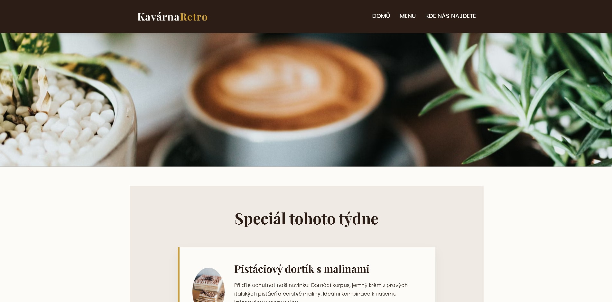
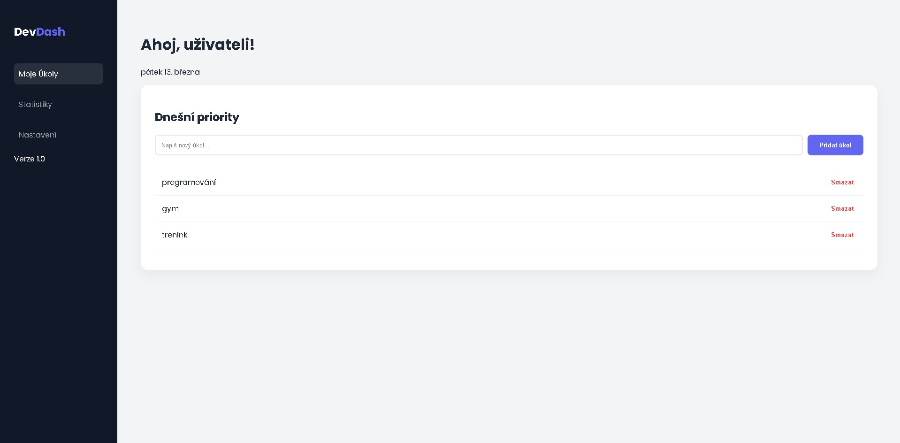

Vybrané projekty

Kavárna Retro – Firemní prezentace
Responzivní webová prezentace optimalizovaná pro maximální výkon a konverzní poměr. Architektura je postavena na moderních CSS standardech a sémantickém HTML s ohledem na lokální SEO.

Smart Task Dashboard (SPA)
Single Page Application pro efektivní time-management. Implementace lokálního úložiště pro perzistenci dat, zpracování uživatelských událostí a dynamické vykreslování DOMu přes čistý JavaScript.